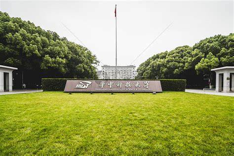

|  |
学校简介华中科技大学是国家教育部直属重点综合性大学，由原华中理工大学、同济医科大学、武汉城市建设学院于2000年5月26日合并成立，是国家“211工程”重点建设和“985工程”建设高校之一，是首批“双一流”建设高校。 学校校园占地7000余亩，园内树木葱茏，碧草如茵，环境优雅，景色秀丽，绿化覆盖率72%，被誉为“森林式大学”。学校教学科研支撑体系完备，各项公共服务设施齐全。 学校学科齐全、结构合理，基本构建起综合性、研究型大学的学科体系。拥有哲学、经济学、法学、教育学、文学、理学、工学、医学、管理学、艺术学、交叉学科等11大学科门类；设有117个本科专业，48个硕士学位授权一级学科，46个博士学位授权一级学科，42个博士后科研流动站。现有一级学科国家重点学科7个，二级学科国家重点学科15个（内科学、外科学按三级计），国家重点（培育）学科7个。在教育部第四轮学科评估中，学校44个学科参评，全部上榜，其中机械工程、光学工程、生物医学工程、公共卫生与预防医学等4个学科进入A+，A类学科14个，B+及以上学科33个。9个学科入选国家第二轮“双一流”建设学科名单。 学校实施“人才兴校”战略，师资力量雄厚。现有专任教师3700余人，其中教授1500余人，副教授1400余人；教师中有院士20人，“973计划”项目首席科学家、重大科学研究计划项目首席科学家、国家重点研发计划项目首席科学家302人，国家级教学名师13人，国家百千万人才工程入选者43人。国家自然科学基金创新研究群体11个，教育部创新团队19个。 学校贯彻建设“学生、学者与学术的大学”的教育思想，秉承“育人为本、创新是魂、责任以行”的办学理念，坚持“一流教学一流本科”的建设目标，采取多种举措，深化教育教学改革，全面推进素质教育，构建和完善充满活力的创新人才培养体系。几十年来，70余万毕业生走向社会，遍布全球各行各业。 按照“应用领先、基础突破、协调发展”的科技发展方略，构建起了覆盖基础研究层、高新技术研究层、技术开发层三个层次的科技创新体系。建设有武汉光电国家研究中心、国家脉冲强磁场科学中心、精密重力测量国家重大科技基础设施、国家数字化设计与制造创新中心等“四颗明珠”为代表的一批国家重大科研基地，拥有7个全国重点实验室、2个国家技术创新中心、1个国家产教融合创新平台、7个国家工程（技术）研究中心、1个国家临床医学研究中心、1个国家医学中心、1个集成攻关大平台、1个“一带一路”联合实验室、6个科技部国家国际科技合作基地及一批省部级科研基地。 学校坚持“以服务为宗旨，在贡献中发展”的办学思路，学研产相结合，与地方政府、行业龙头企业建立紧密合作关系，通过设立异地研究院、共建联合研究中心等方式开展科技合作，大力促进科技成果转化落地，为区域经济建设服务。 学校坚持开放式办学理念，积极开展全方位、多层次的国际交流与合作，目前已与世界上41个国家和地区的300余所高校和机构开展友好合作。工程科学学院是全国首批四个国际化示范学院之一，中欧清洁与可再生能源学院被列为中欧建交40周年40个典型案例之一。 附属协和医院、同济医院是集医疗、教学、科研、培训为一体的大型现代化综合性医院，是湖北省乃至中南地区的医疗诊治中心。附属梨园医院突出老年病学的特色，是湖北省老年病防治研究中心。 在强国建设、民族复兴的新征程上，华中科技大学将坚持以习近平新时代中国特色社会主义思想为指导，牢记为党育人、为国育才的初心使命，秉持“明德、厚学、求是、创新”的校训，敢于竞争，善于转化，聚精会神，科学发展，加快建设中国特色世界一流大学，努力为中国式现代化和人类文明进步作出新的更大贡献。 |
| 返回首页 |